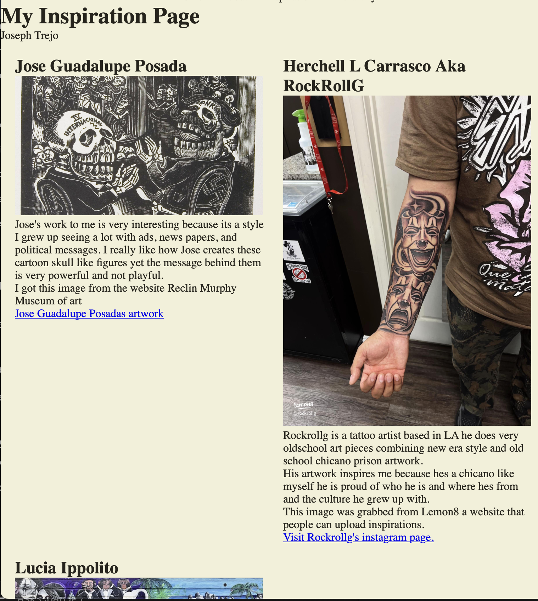
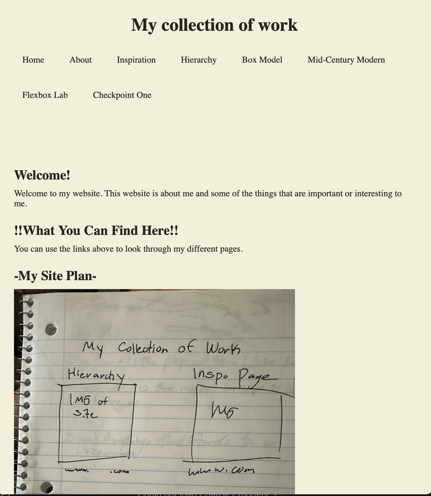

OCtober 19 -Flexbox
Today was the flexbox aspect of the assignment and it went well it was pretty easy to understand and I was able to get the flexbox to work and make the page look like a website. I did have to look up some of the instructions because they were a bit confusing but overall I was able to get it done and make it look like a website. It was one of the easier assignments we hsve done in class I think i made a mistake or two but its ok as its part of the learning process and will get better with time as i continure working with vs code
My Flexbox Progress
These screenshots show how my website looks normally and how it changes when the screen gets smaller.

